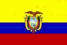

|
Länderinformationen Südamerika
1. Das Wichtigste auf einen Blick2. Sehens- und Hörenswertes
3. Politik & Gesellschaft
4. Schmeckenswertes
5. Medien
6. Reisetipps
1. Wissenswertes
Hier
haben wir die wichtigsten Zahlen und Fakten zu Südamerika
und der südamerikanischen Sprache zusammengetragen. |
Wir freuen uns, dass Sie sich für den Spanischkurs Südamerika von Sprachenlernen24 entschieden haben.
Wir möchten Ihnen gerne die Reisevorbereitungen erleichtern und Ihnen einen kleinen Vorgeschmack dessen geben, was Sie in Südamerika erwarten wird. Deshalb haben wir hier, ergänzend zum Sprachkurs, Wissenswertes, Interessantes, Kulinarisches und vieles mehr zu Sprache, Land und Menschen zusammengetragen.
 Spanisch
ist nicht Spanisch?
Spanisch
ist nicht Spanisch?
Von Kolumbien und Peru bis an den Südzipfel Argentiniens: Man spricht – abgesehen von den Ausnahmen Brasilien, Guyana, Suriname und Französisch-Guayana – Spanisch. Aber auch andere europäische Sprachen wie zum Beispiel Englisch kann man in Argentinien hören. Deutsch wird im Süden Brasiliens, in Teilen Chiles, in Argentinien und in deutschsprachigen Orten in Venezuela gesprochen. Wenn Sie Italienisch können, kommen Sie in Brasilien, Argentinien, Uruguay und Venezuela gut zurecht.
Aber unterscheidet sich dieses Spanisch in Südamerika von jenem, das auf dem europäischen Festland gesprochen wird? Diese Frage muss man mit einem entschiedenen „Ja“ beantworten. Dann kann ein Argentinier einen Spanier aus Europa also nicht verstehen? Diese Frage wiederum muss man mit einem entschiedenen „Nein“ beantworten. In der Regel werden ein Argentinier und ein Spanier keine Probleme haben, sich einander verständlich zu machen.
Wir möchten Ihnen im Folgenden einen kleinen Einblick geben in die Variante(n) des Spanischen, die Sie auf Ihrer Reise durch Südamerika zu Ohren bekommen werden und Ihnen die Unterschiede zum, in Europa gesprochenen Spanisch aufzeigen.
 Kurze
Sprachgeschichte: Warum ist das in
Kurze
Sprachgeschichte: Warum ist das in
Lateinamerika gesprochene Spanisch
anders?
Lateinamerika gesprochene Spanisch anders?
Warum ist das in Südamerika gesprochene Spanisch anders? – Dieser Frage wollen wir hier nachgehen. Die Antwort darauf findet man in der Geschichte des Kontinents:
Alle Unterschiede und Besonderheiten haben ihre Wurzeln in der Kolonialzeit. 1492 machte sich Christoph Kolumbus auf, einen Seeweg nach Indien zu finden und entdeckte dabei Amerika. Mit im Gepäck hatte er das zu dieser Zeit am Hofe des spanischen Königs gesprochene Kastilisch. Diese Hochsprache des spanischen Königshofs wurde auch in der Folgezeit in den Kolonien gepflegt. Durch die große räumliche Distanz zu Spanien machte allerdings das Spanisch in Lateinamerika bestimmte Veränderungen, die in der Sprache in Spanien stattfanden, nicht mit. So erscheint das Spanisch Lateinamerikas dem europäischen Spanier heute als eher konservativ und oftmals altertümlich.
Eine weitere Besonderheit, die auf die Entwicklung der spanischen Sprachvariante in Südamerika Einfluss hatte, war, dass in der Zeit der ersten Welle der spanischen Besiedelung besonders viele Menschen aus Andalusien in die neue Welt aufbrachen. In der Zeit von 1492 bis etwa 1510 stammten schätzungsweise 60 Prozent aller Übersiedler aus dieser Region im Süden Spaniens. Forscher erklären dies damit, dass das Klima in Andalusien dem in einigen Regionen Lateinamerikas besonders ähnelte und die Siedler so bestens für die klimatischen Bedingungen gerüstet waren, die sie in ihrer neuen Heimat vorfinden würden. Natürlich sprachen diese Siedler ihre eigene Variante des Spanischen. Linguisten benennen deshalb das Phänomen, dass im lateinamerikanischen Spanisch ein besonders großer lautlicher Einfluss des Andalusischen zu finden ist, mit dem Ausdruck „Andalucismo“.
In Amerika fanden die Siedler und Missionare viele unterschiedliche Sprachen der Ur-Bevölkerung vor, mit denen sie sich auseinandersetzen mussten. Manche Wörter dieser Sprachen (wie zum Beispiel batata (dt. Süßkartoffel) aus dem Arawak, tomate (dt. Tomate) aus dem Náhuatl, ananá (dt. Ananas) aus dem Guarani oder guata (dt. Bauch) aus dem Quechua fanden so Eingang in den Wortschatz des in Südamerika gesprochenen Spanisch.
Aber nicht nur die indigenen Sprachen beeinflussten das Spanische. Auch afrikanische und europäische Sprachen (wie das Portugiesische und in der jüngsten Vergangenheit das Englische) hinterließen ihre Spuren im Wortschatz des südamerikanischen Spanisch.
Drei große Unterschiede:
Zusammenfassend
kann man feststellen, dass das Spanisch des europäischen
Festlandes und das Spanisch Lateinamerikas sich hinsichtlich dreier
Dimensionen unterscheiden.
- Es
gibt oft große Unterschiede im Wortschatz, die manchmal zu
peinlichen
Situationen oder Verständigungsproblemen
führen können:
In Südamerika werden Sie zum Beispiel oft colectivo als Synonym für autobús (dt. Bus) hören. In Spanien aber meint man mit colectivo nur ein Kollektiv im Sinne einer Gruppe von Personen – kein öffentliches Verkehrsmittel.
Dies ist nur eines von vielen, vielen Beispielen unterschiedlicher Entwicklungen im Wortschatz der beiden Varianten dieser Sprache. So manche, häufig benutzte Wörter können ganz unterschiedliche Bedeutungen haben. Da dieser Bedeutungswechsel oft in den Bereich sexueller Konnotationen geht, sollten Sie diese Unterschiede kennenlernen, um peinliche Situationen zu vermeiden.
- Hinsichtlich
der Aussprache
gibt es (aufgrund oben genannter Einflüsse und diverser
eigenständiger Entwicklungen) ebenfalls einige Unterschiede.
In Lateinamerika gibt es zwei phonologische Phänomene, die den ganz speziellen Sound in den Staaten Südamerikas ausmachen. Das ist zum einen der sogenannte Seseo. Dieses linguistische Phänomen hat mit der Aussprache der Buchstaben c, s und z zu tun. Die zweite Besonderheit benennt die spanische Sprachwissenschaft mit der Bezeichnung Yeísmo. Dabei werden der Buchstaben j und die Buchstabenkombination ll anders ausgesprochen als im Kastilischen. Diese beiden Phänomene tauchen aber nicht in allen Ländern Lateinamerikas auf.
- Und
schließlich sind auch einige grammatische
Feinheiten und einige größere Unterschiede
zu beachten.
Die Unterschiede sind zwar klein, wenn man die Fülle grammatischer Regeln und Phänomene in ihrer Gesamtheit betrachtet. Aber dennoch sollte man drei Besonderheiten des Spanischen in Lateinamerika kennen. Das macht einfach das wirkliche Kennen und Können einer Sprache aus. Die Besonderheiten, auf die eben angespielt wurde, sind: Der sogenannte „Voseo“ (Sie hören in Südamerika beispielsweise statt túcomes (dt. du isst)vos comés (dt. ihr esst)) und in der Folge Verschiebungen im Pronominalgefüge. Außerdem gibt es das linguistische Phänomen des „Loismo“. Diese Besonderheit tritt nur beim Ersetzen männlicher Akkusativobjekte im Singular auf. In diesem Fall verwendet man auf dem europäischen Festland le und in Südamerika lo. Von diesem lo leitet sich auch die Bezeichnung Loismo ab.
Neben Voseo und Loismo gibt es in manchen Ländern noch einige Vorlieben, was den Gebrauch bzw. den Nicht-Gebrauch bestimmter Zeiten angeht.
Beginnen wir mit der Vergangenheit: Die Zeit, die dem deutschen Perfekt entspricht – das pretérito perfecto – wird in Lateinamerika nicht gerne eingesetzt, um Handlungen in der Vergangenheit zu kennzeichnen und zu beschreiben. Man greift stattdessen bevorzugt auf das pretérito indefinido zurück. Die Absicht des Sprechers ist in diesen Fällen, das Noch-Andauern einer Handlung, die in der Vergangenheit begonnen hat, zu betonen.
Auch beim Gebrauch der Bildungsmöglichkeiten der Futurform hat man in Lateinamerika eine eindeutige Vorliebe: Auf dem europäischen Festland kann man das Futur auf zwei Arten bilden: Zum einen kann man eine zusammengesetzte Form mit (ir + a + Infinitiv des Verbs) benutzen. Dies macht man vor allem in der Umgangssprache um auszudrücken, dass eine Handlung ganz sicher eintreten wird. Wenn man sich nicht sicher ist, ob etwas in der Zukunft passieren wird oder nicht, benutzt man eine spezielle Verbform. Anders in Lateinamerika, dort favorisiert man allgemein die Bildung der Zukunft mit „ir + a + Infinitivform des Verbs“. Man unterscheidet hier nicht zwischen sicheren Aussagen und Vermutungen über die Zukunft.
Im Imperfekt des subjunctivo (dem pretérito imperfecto de subjuntivo) kann man auf dem europäischen Festland zwischen zwei Arten der Bildung wählen: Diese Zeit kann man erstens mit Formen auf -ra bilden und zweitens mit Formen auf -se bilden. In Lateinamerika bildet man diese Zeit nur mit den Formen auf -ra.
Wir hoffen, Ihnen mit dieser kurzen Einführung einen ersten Überblick über die Unterschiede zwischen den beiden großen Varianten des Spanischen gegeben zu haben. Viel Spaß und Erfolg beim Spanisch-Lernen und eine wunderschöne Reise durch Südamerika!
Im Folgenden erfahren Sie mehr über die einzelnen Staaten, ihre Bewohner, deren Kultur und ihre Lebensart.
Erste, ganz allgemeine Informationen zum Thema Südamerika finden Sie zum Beispiel auf den Internetseiten: www.laam.org oder unter www.maya-culture.de.
Wenn Sie sich einen ersten Überblick zu den einzelnen Ländern verschaffen möchten, werfen Sie einen Blick auf die folgende Tabelle. Hier haben wir die Internetauftritte zu den einzelnen Ländern gesammelt. Hierbei handelt es sich teilweise um den offiziellen Außenauftritt des Landes, teilweise aber existieren nur kommerzielle Angebote:
|
Land |
Internetseite |
|
Argentinien |
|
|
|
|
|
|
|
|
 Ecuador |
|
|
|
|
|
|
|
|
|
|
|
|
|
|
|
 Nationalflaggen
Nationalflaggen
Wenn Sie die eine oder andere südamerikanische Nationalflagge vielleicht nicht kennen, werfen Sie einen Blick auf unsere folgende Tabelle*. Dort sehen Sie beispielsweise die Fahne Argentiniens und lernen die Flagge von Bolivien kennen. Dazu haben wir Ihnen beschrieben, wie die Fahnen entstanden sind bzw. wie sie gedeutet werden.
*Der Übersichtlichkeit wegen haben wir in diesem Länderbericht viele Fakten tabellarisch aufbereitet.
|
Argentinien |
Die argentinische Flagge besteht aus zwei hellblauen Streifen,
die in der Mitte einen weißen Streifen einfassen. Auf diesem
weißen Streifen ist eine Sonne abgebildet, deren 32
Sonnenstrahlen abwechselnd gerade und geflammt sind.
Der Überlieferung nach entstand diese Fahne folgendermaßen: Der argentinische Freiheitsheld Manuel Belgrano soll zu diesem Symbol inspiriert worden sein, als er während der Schlacht von Paraná in den Himmel schaute. Aus diesem Grund wird auch sein Todestag, der 20. Juni 1820, heute als Día de la Bandera – als Tag der argentinischen Flagge – in seinem Gedenken gefeiert. Die Sonne in der Mitte der Flagge wird Sol de Mayo genannt, was soviel bedeutet wie Mai- oder Inkasonne. Sie tauchte bereits in früheren argentinischen Flaggen auf und findet sich im Wappen des Landes wieder. Die Sonne hat ein Gesicht, welches in der Inka-Mythologie den Sohn des göttlichen Schöpfers Inti symbolisiert. Diese Sonnendarstellung ist identisch mit derjenigen Sonne, die auf den ersten argentinischen Münzen aufgeprägt war. Früher war die heutige Flagge eine Kriegsflagge, in Friedenszeiten war sie ohne Sonnendarstellung. Später hatte die Flagge mit Sonne offizielle Funktion, die ohne Sonne für den privaten Gebrauch. Heute kann man beide Versionen nach Belieben verwenden. |
 Bolivien
Bolivien |
Die bolivianische Flagge
besteht aus drei gleich breiten, horizontalen Streifen in den
Farben rot, gelb und grün. Das Rot steht für die
Tapferkeit der bolivianischen Soldaten, das Gelb für
den Reichtum an Mineralschätzen und das Grün
symbolisiert die Fruchtbarkeit des Landes.
Wie Ihnen vielleicht aufgefallen ist, entsprechen diese Farbkombination den panafrikanischen Farben, die fast alle Ähnliches symbolisieren. Diese Übereinstimmung ist jedoch zufällig, außerdem sind die bolivianischen Farben älter bzw. werden schon länger als Landesfarben benutzt. Im gelben Mittelstreifen ist das Staatswappen abgebildet, das manchmal im Vordergrund einer blauen Scheibe steht. In der Kriegsflagge zu Land wird das Staatswappen außerdem von einen Lorbeerkranz umrahmt. |
 Chile
Chile |
Wenn Sie finden, die
chilenische Fahne sieht ein wenig aus wie die der USA, haben Sie
gar nicht unrecht. Sie wurde auch 1817 von einem amerikanischen
Pioniersoffizier in chilenischen Diensten entworfen.
Die Farben sind nicht nur die der amerikanischen Flagge, sondern sie stehen auch stellvertretend für die Landschaft der Andenstaaten: das Blau steht für den Himmel über Chile, das Rot symbolisiert das vergossene Blut der Freiheitskämpfer und das Weiß ist typisch für den Schnee, der die Berggipfel der Anden bedeckt. Der weiße Stern in der linken oberen Ecke kann mehrere Bedeutungen haben, z.B. symbolisiert er Ehre und Fortschritt oder die Tatsache, dass Chile ein zentral und nicht bundesstaatlich organisierter Staat ist. |
|
Ecuador |
Die drei Farben der ecuadorianischen Flagge sind dieselben wie
diejenigen Kolumbiens und Venezuelas. Dies liegt daran, dass es
sich hierbei um die Farben des ehemaligen Großkolumbiens
handelt, dem alle drei Staaten und Panama angehörten und das
1830 zerbrach.
Die Flagge Ecuadors wurde am 26. September 1860 offiziell eingeführt. Gelb bzw. Gold steht für die Sonne und den (Getreide-) Reichtum, Blau für die Schönheit der Natur, den Himmel und das Meer und Rot für das Blut, dass die ecuadorianischen Freiheitskämpfer für republikanische Freiheit und Unabhängigkeit vergossen haben. Das Verhältnis Gelb zu Blau zu Rot ist 2:1:1. In der Mitte der Flagge ist ein Kondor abgebildet, der das Wappen des Landes festhält. |
 Kolumbien
Kolumbien |
Seit dem 26.11.1861 ist die links abgebildete Fahne die
offizielle Flagge Kolumbiens.
Modern interpretiert steht ihr goldener Streifen für Gerechtigkeit und Souveränität, der blaue Streifen symbolisiert Mut und Treue und der rote Streifen steht für das Blut, das im Kampf für die Freiheit vergossen wurde und symbolisiert damit Tapferkeit und Ehre. Es gibt jedoch auch andere Deutungen. Auch hier ist das Größenverhältnis der Farben 2:1:1. Eigentlich wurde das Design von Francisco de Miranda für Venezuela entworfen und dann später auch für Großkolumbien verwendet, weswegen die bereits erwähnte, starke Ähnlichkeit zu den Flaggen Venezuelas und Ecuadors besteht. |
 Paraguay
Paraguay |
Für die
Entstehung der paraguayischen Flagge, die 1842 offiziell
eingeführt wurde, gibt es mehrere Erklärungen. Die eine
ist, dass sie auf das Jahr 1806 zurückgehen soll, als die
Truppen des Landes weiße, blaue und rote Flaggen mit sich
führten, als sie Buenos Aires gegen den Einfall der Briten
unterstützten. Eine weitere Version besagt, dass der Diktator
José Gaspar Rodríguez de Francia das Design
einführte, da er ein großer Verehrer Napoleons war und
sich deshalb ganz bewusst an die französische Trikolore
anlehnte.
Die Farben haben für die Menschen in Paraguay folgende Bedeutungen: Rot steht für Gerechtigkeit (Justicia), Weiß für Paz, den Frieden, und Blau für die Freiheit (Libertad). Die Flagge Paraguays weist noch eine Besonderheit auf: Sie ist neben der moldawischen Nationalflagge die einzige geltende Staatsflagge, deren Vorder- und Rückseite unterschiedlich gestaltet sind. Während sich nämlich auf der Vorderseite im mittleren weißen Streifen das Staatswappen befindet, ist auf der Rückseite an dieser Stelle das Emblem des Finanzministeriums zu sehen. Der Tag der Fahne (Día de la Bandera) wird am 14. August gefeiert. |
 Peru
Peru |
Die peruanische
Nationalflagge besteht aus den gleich breiten Streifen
Rot-Weiß-Rot in typisch republikanischer, senkrechter
Streifenform nach Vorbild der französischen Tricolore.
Im mittleren weißen Streifen ist das Landeswappen abgebildet. Diese Flagge muss am Nationalfeiertag, dem 28. Juli, wirklich alle Gebäude im Land schmücken. Sie ist die reduzierte Fassung der ersten offiziellen Nationalflagge, die wohl auch rot-weiß-gestreift war, allerdings vier Farbfelder besaß und zudem in ihrer Mitte ein Wappen trug. Eine Abbildung dieser Version ist jedoch nicht erhalten, lediglich eine Beschreibung des Generals José de San Martín aus dem Jahr 1820 existiert noch. |
 Uruguay
Uruguay |
Die Flagge Uruguays
erinnert stark an die argentinische Fahne – und dies hat
auch einen Grund: Sie stammt aus der Zeit, als Uruguay
(damals hies es noch Östliches
Ufer des Uruguays,
Banda Oriental del
Uruguay)
Teil der Vereinigten Provinzen des Río de la
Plata (Provincias Unidas del Río de la Plata)
war. Diese bestanden aus dem Territorium des heutigen
Argentiniens, Uruguays und dem bolivianischen Departamento
Tarija. Die Flagge der Vereinigten Provinzen damals war
weiß-blau, genauso wie diejenigen Argentiniens und Uruguays
heute.
Nach der Unabhängigkeit des Landes 1828 wurde 1830 eine Flagge mit den heutigen neun Streifen in himmelblau und weiß angenommen, welche die ursprünglichen Departments symbolisieren. Es gab dann im 19. Jahrhundert noch mehrere Modifikationen, bis man 1851 zur verfassungsmäßigen und noch heute gültigen Version vom 11. Juli 1830 zurückkehrte. Im Unterschied zur argentinischen Sol de Mayo, hat die Sonne hier nur 16 Strahlen statt 32 und ist zudem oben links platziert. |
 Venezuela
Venezuela |
Die
Flagge Venezuelas geht aus derjenigen des 1830 zerfallenen
Großkolumbiens hervor.
Zunächst sternenlos, besaß sie ab 1859 dann sieben Sterne, deren Darstellung bis zur Version von 1954 variierte, welche im Grunde bis heute gleich geblieben ist. Die sieben halbkreisförmig angeordneten weißen Sterne im blauen Streifen erinnern ein wenig an die Flagge der EU und stehen für die sieben Provinzen Venezuelas, welche die Unabhängigkeit mitgetragen haben: Caracas, Cumaná, Barcelona, Margarita, Trujillo, Batinas und Merida. Am 12. März 2006 kam noch ein achter Stern hinzu. Diese Änderung geht auf ein Dekret Simón Bolívars aus dem Jahre 1817 zurück, das besagt, durch die Einführung eines achten Sternes solle die Unabhängigkeit Guyanas gewürdigt werden. Die drei Farben der Flagge werden ähnlich den anderen beiden aus Groß-Kolumbien hervorgegangenen Staaten folgendermaßen gedeutet: Der gelbe Streifen symbolisiert den Sonnenschein und den goldenen Boden des Landes, der blaue Streifen steht für die Unabhängigkeit von Spanien und für das Meer, welches Venezuela von Spanien abgrenzt und die Farbe Rot im untersten Streifen symbolisiert den Mut und das Blutvergießen während der Revolution Simón Bolívars um Venezuela. |
 Indigene Bevölkerung
Indigene Bevölkerung
Ein Teil der Bevölkerung Südamerikas stammt von den Ureinwohnern des Kontinents ab. Diese indigenen Völker Südamerikas werden häufig „Indios“ genannt. Da diese Bezeichnung jedoch von den Angehörigen dieser Völker als abwertend und rassistisch empfunden wird, werden wir im Folgenden nur von der „indigenen Bevölkerung“ Südamerikas sprechen.
Ausführliche Informationen zu den indigenen Völkern Südamerikas finden Sie im Internet unter http://www2.gtz.de/indigenas/index.html.
Die Ureinwohner Südamerikas lebten bereits lange vor der (Wieder-) Entdeckung Amerikas auf dem südamerikanischen Kontinent. Man unterscheidet die Völker des Tieflandes und die Andenvölker. Die am weitesten verbreiteten indigenen Sprachen Südamerikas sind die der Quechua (nach ihrem einstigen Herrschertitel auch Inka genannt) der Aymara und die der Tupí-Guaraní-Sprachen.
Heute existieren nur noch 350 indigene Sprachen der früher rund 1500. Im Gegensatz zu Nordamerika sind die südamerikanischen indigenen Sprachen noch wenig erforscht. Die Einteilung und Zuordnung in Sprachfamilien ist – wie in ganz Amerika – unter Sprachwissenschaftlern stark umstritten.
Während die Zahl der Sprecher in Südamerika erheblich höher als in Nordamerika ist, werden dafür insgesamt weniger Sprachen gesprochen.
Im östlichen Tiefland herrschen die Tupi-Sprachen vor, deren größter Zweig die bereits erwähnten Tupí-Guaraní-Sprachen sind. Die Quechua-Sprachen hingegen findet man vor allem im Andenraum. Das Aymara wiederum, das zu den Aru-Sprachen gehört, ist vor allem in den Anden im westlichen Südamerika zu finden.
Die Anzahl der indianischen Ureinwohner in den spanischsprachigen Ländern Südamerikas variiert. Während in Kolumbien verhältnismäßig wenige Menschen rein indigener Abstammung sind, ist in Andenstaaten wie Ecuador ihr Anteil viel höher: In Ecuador rechnen sich 25 Prozent der Bevölkerung zur indigenen Völkern, in Peru sind es rund 45 Prozent und in Bolivien zwischen 60 und 70 Prozent.
Weiter im Süden nimmt der Anteil indigener Ureinwohner an der Gesamtbevölkerung wieder ab, in Chile beispielsweise liegt der Anteil nur noch bei knappen fünf Prozent, wovon die meisten dem Stamm der Mapuche angehören. Die Mapuche sind ethnisch nicht eindeutig zuzuordnen und könnten zu allen drei Volksgruppen, also sowohl zu den Aymara, den Tupí-Guaraní oder den Quechua gehören.
In Argentinien leben nur noch zwei bis drei Prozent mit indigener Abstammung, in Uruguay schließlich gibt es fast gar keine Nachfahren der Urbevölkerung mehr, in Paraguay liegt ihr Anteil bei 5 Prozent.
In allen Ländern Südamerikas gibt es natürlich eine relativ große Anzahl an Menschen, die aus Beziehungen von Menschen mit indigener und europäischer Abstammung hervorgegangen sind.
Leider ist die Existenz vieler Menschen indigener Herkunft kein Garant dafür, dass deren jeweilige Sprache auch als Amtssprache anerkannt wird. Ausnahmen bilden Bolivien, Peru und Paraguay. In Peru ist Quechua neben Spanisch die zweite Amtssprache. In Bolivien haben die drei indigenen Sprachen Aymara, Quechua und Guaraní neben dem Spanischen offiziellen Status, und in Paraguay besitzt Guaraní neben Spanisch den Status einer offiziellen Sprache, und wird dort auch von einer zweisprachigen Mehrheit verwendet. Kolumbien erkennt sogar alle indigenen Sprachen, die im Land gesprochen werden, als offizielle Sprachen an. Hier gibt es jedoch weniger als ein Prozent an Muttersprachlern.
Da es große klimatische und landschaftliche Unterschiede bei den Lebensräumen der südamerikanischen Kulturen gab bzw. gibt, existiert zwischen ihnen eigentlich keine grundsätzlichen Übereinstimmungen. Ihre größte Gemeinsamkeit ist wohl die leidvolle Erfahrung von Unterdrückung und Verlust der kulturellen Identität durch die Kolonialherrschaft der Spanier und Portugiesen und heute durch die modernen Nationen.
Während die mittelamerikanischen Hochkulturen über eine eigene Schrift verfügten, gab es nach dem Stand heutiger Forschungen in Südamerika keine Schrift im eigentlichen Sinne. Die Inkas benutzten eine Knotenschrift, Quipu, die jedoch vor allem der Erfassung statistischer Daten diente und wohl hauptsächlich aus Ziffern bestand.
Insgesamt weiß man nach wie vor nur wenig über die Geschichte vieler Stämme. Gegenwärtig gibt es vor allem in Regenwaldgebieten immer noch zahlreiche, weitgehend unbekannte Stämme. Erst im April 2008 kam es beispielsweise zur Begegnung mit Stämmen, die man noch nie oder nur selten gesehen hatte und deren Existenz nur mittelbar bekannt war. Sie waren zuvor nie oder nur selten mit Nicht-Indianern in Kontakt gekommen, weshalb sie sehr gefährdet sind was die für uns eher ungefährlichen Krankheiten wie Grippe betrifft, da sie hiergegen über keinerlei Resistenz verfügen. So ist hier eine genauere Erforschung nicht möglich, da ein Kontakt mit diesen Völkern streng untersagt ist.. Eine traurige Tatsache ist nämlich, dass fast die Hälfte aller entdeckten, isolierten Stämme durch Krankheiten starb, als man sich ihnen näherte.
Um ihre Interessen zu verteidigen, haben die Südamerikaner indigener Abstammung nationale Organisationen gegründet. Im Amazonasgebiet beispielsweise entstand 1984 die COICA (Coordinadora de las Organizaciones Indígenas de la Cuenca Amazónica). Ihre fünf strategischen Leitlinien sind Nachhaltigkeit, die gerechte Verteilung von Territorien und natürlichen Ressourcen, ein angemessenes Rechtssystem, die Stärkung von traditionellem Wissen und Organisationsstrukturen zur akademischen und wissenschaftlichen Bildung.
In den letzten Jahren gelang es einigen Menschen indigener Abstammung, Schlüsselpositionen in der politischen Landschaft zu besetzen. Beispiele hierfür sind der peruanische Ex-Präsident Alejandro Toledo, der peruanische Präsidentschaftskandidat Ollanta Humala oder Evo Morales, der erste indigene Präsident Boliviens. Da die wirtschaftlich starke, weiße Elite traditionell eng mit rechten politischen Bewegungen verbunden ist, sind indigene Politiker meist eher dem linken politischen Spektrum zuzuordnen.
Einwohner in Zahlen
Weiter geht es mit den „harten Fakten“ zu den jeweiligen Ländern. Sehen Sie im Folgenden die wichtigsten Informationen (zumeist Zahlen) im direkten Vergleich.
Es folgt ein kurzer Überblick über die indigene Bevölkerung kombiniert mit der Gesamteinwohnerzahl der Länder. Die Prozentzahlen sind ungefähr, da die Angaben hier teilweise stark variieren.
Wie viele Menschen leben in den Staaten Südamerikas und welcher Abstammung sind sie?
|
Land |
Einwohnerzahl |
Abstammung |
|
Kolumbien |
43,9 Mio. |
In Kolumbien
sind 48 Prozent der Menschen Nachkommen von Europäern und
indigenen Bevölkerungsteilen, 30 Prozent Nachfahren der
europäischen Kolonialisten, 14 Prozent Nachkommen von
Europäern und afrikanischen Sklaven (Mulatten und Kreolen),
vier Prozent afrikanischer Abstammung und drei Prozent Nachfahren
von afrikanischen Sklaven und indigener Bevölkerung.
Insgesamt haben 3,2 Prozent der Bevölkerung Elternteile, die
beide indigener Abstammung sind. |
|
Argentinien |
38,9
Mio. |
Da
Argentinien im 19. und 20. Jahrhundert Einwanderungsland war,
stammt seine Bevölkerung zu einem Großteil von
Europäern, vorwiegend von Italienern und Spaniern, ab. Circa
zwei Prozent der Menschen sind indigener Abstammung.
|
|
Peru |
ca. 27 Mio. |
In Peru sind
47 Prozent der Bevölkerung indigener Abstammung,
hauptsächlich Angehörige der Quechua und Aymará,
37 Prozent sind Nachkommen von indigenen Bevölkerungsteilen
und Europäern, 13 Prozent sind europäischer und drei
Prozent asiatischer und afrikanischer Herkunft. Damit ist Peru
neben Bolivien eines der spanischsprachigen Ländern
Südamerikas mit mehrheitlich indigener Bevölkerung.
|
|
Venezuela |
rund 27 Mio. |
75 bis 80
Prozent der venezuelanischen Bevölkerung sind gemischter,
europäisch-afrikanisch-indianischer Abstammung, 15 bis 20
Prozent europäischer, drei bis fünf Prozent
afrikanischer und eineinhalb Prozent indianischer Abstammung. |
|
Chile |
16,6 Mio.
|
Chilenen mit europäischen Vorfahren und oder
gemischt europäisch-indigener Abstammung machen rund 95
Prozent der Bevölkerung aus, wobei rund 75 Prozent zu
Letzteren zählen. Die restlichen fünf Prozent sind
indigene Bevölkerungsteile.
|
|
Ecuador |
13,9 Mio. |
In Ecuador
sind rund 65 Prozent gemischt europäisch-indigener
Abstammung, 25 Prozent Indigene, drei Prozent Afro-Ecuadorianer
sowie sieben Prozent europäischer und anderer Herkunft. Es
gibt aber auch andere Schätzungen. |
|
Bolivien |
10 Mio. |
In Bolivien
gehören 65 Prozent der Menschen zur indigenen Bevölkerung,
35 Prozent sind gemischt europäisch-indianischer Abstammung
|
|
Paraguay |
ca. 6,5 Mio. |
90 Prozent der
Menschen in Paraguay sind gemischt spanisch-indianischer (Guaraní)
Abstammung, rund fünf Prozent rein indigener Abstammung. |
|
Uruguay |
3,48 Mio. |
In Uruguay
sind die Menschen überwiegend, zu fast 90 Prozent,
europäischer (spanischer und italienischer) Abstammung. Circa
acht Prozent haben gemischt indigen-europäische Elternteile
und vier Prozent sind die Nachkommen afrikanischer Sklaven.
Einwohner rein indigener Herkunft gibt es kaum noch.
|
Hier noch zur Vervollständigung die jeweiligen offiziellen Sprachen der Länder:
|
Land |
Offizielle Landessprache |
|
Argentinien |
Spanisch |
|
|
Spanisch, Quechua, Aymara |
|
|
Spanisch |
|
Ecuador |
Spanisch |
|
|
Spanisch |
|
|
Spanisch, Guarani |
|
|
Spanisch, Quechua, Aymara |
|
|
Spanisch |
|
|
Spanisch |
 Fläche
Fläche
Nun zu geographischen Details. Flächenmäßig sind die südamerikanischen Staaten ziemliche Giganten. Hier ist schon der kleinste Staat so groß wie ein mittelgroßer europäischer Staat.
Um Ihnen die Größendimensionen ein wenig zu veranschaulichen, haben wir in der rechten Spalte der Tabelle die Flächen der Staaten mit denen europäischer Staaten verglichen.
|
Wie
groß sind die Staaten Südamerikas? |
||
|
Land |
Fläche
(in km2) |
Das
ist ungefähr... |
|
Argentinien |
2,78 Mio. km², erhebt Anspruch auf 1,23 Mio
km² Antarktis |
...fünfmal
so groß wie Frankreich (547.030 km²
) |
|
Peru |
1,28 Mio. km²,
3.079 km Küstenlinie |
...doppelt so groß wie die Ukraine (603.700
km²) |
|
Kolumbien |
1,141 Mio. km² |
...zehnmal
so groß wie Bulgarien (110.910 km²) |
|
Bolivien |
1.098.581 km² |
...dreimal
so groß wie Finnland (337.030 km²) |
|
Venezuela |
916.445 km² |
...dreimal
so groß wie Italien (301.230
km²) |
|
Chile |
756.626 km² |
...mehr als doppelt so groß wie Deutschland
(357.092 km²) |
|
Paraguay |
406.752 km² |
...fast
so groß wie Schweden (449.964
km²) |
|
Ecuador |
283.600
km² |
...so
groß wie Neuseeland (270.534 km²) |
|
Uruguay |
176.215 km² davon 87,6% agrartaugliches Land; maritime
Wirtschaftszone: 140.000 km² |
...viermal
so groß wie Dänemark (43.094 km²) |
 Hauptstädte
Hauptstädte
Als Nächstes bieten wir Ihnen einen Überblick über die jeweiligen Hauptstädte mit ihrem Internetauftritt. So können Sie sich über dortige Unterkunftsmöglichkeiten, Sehenswürdigkeiten, Veranstaltungen und noch über vieles mehr erkundigen.
|
Land |
Hauptstadt |
Einwohnerzahl |
Offizieller
Internetauftritt der Stadt |
|
Argentinien |
Buenos
Aires |
2,77
Mio., Großraum (Bundeshauptstadt plus
Einzugsgebiet): 12 Mio.
|
|
|
Bolivien |
Verfassungsmäßig:
Sucre Regierungssitz: La Paz |
250.000 bzw. 900.000 |
|
|
Chile |
Santiago
de Chile |
ca.
6 Mio. |
|
|
Ecuador |
Quito |
ca.
2 Mio. |
|
|
Kolumbien |
Santa
Fe de Bogotá |
ca.
7,2 Mio. |
|
|
Paraguay |
Asunción |
ca. 1 Mio. (Großraum ca. 1,5 Mio.) |
|
|
Peru |
Lima |
ca.
7 Mio., mit der Hafenstadt Callao ca. 8,3 Mio.
|
|
|
Uruguay |
Montevideo |
1,355
Mio.
|
|
|
Venezuela |
Caracas |
mit
Einzugsgebiet rund 5,5 Mio.
|
 Währung
Währung
Südamerika ist groß und in jedem der spanischsprachigen Staaten bezahlt man mit einer anderen Währung.
Wir haben hier eine Übersicht für Sie zusammengestellt, in welchem spanischsprachigen Land Sie welche Münzen und Scheine in der Tasche haben werden. Wenn Sie die aktuellen Kurse wissen möchten, werfen Sie einen Blick auf die Seite www.umrechnung24.de.
|
Währungen
in den Ländern Südamerikas: |
|
|
Argentinien |
Argentinischer
Peso ($/ arg$, ARS) |
|
|
Boliviano,
ugs.: Peso (Bs, BOB) |
|
|
Chilenischer
Peso (chil$, CLP) |
|
Ecuador |
US-Dollar
($, USD) |
|
|
Kolumbianischer
Peso ($, COP) |
|
|
Guaraní
(G̸,
PYG) |
|
|
Nuevo
Sol (S/., PEN) |
|
|
Uruguayischer
Peso ($ / $U, UYU) |
|
|
Bolívar
(BsF, VEF) |
 Ökonomische Situation
Ökonomische Situation
Auf www.auswaertiges-amt.de, der Homepage des deutschen Auswärtigen Amtes, können Sie sich fundiert zur aktuellen wirtschaftlichen Lage der jeweiligen südamerikanischen Länder informieren.
In
nächsten Kapitel laden wir Sie zu einer kleinen, virtuellen
Reise durch Südamerika ein. Dort stellen wir Ihnen einige ganz
besondere Sehenswürdigkeiten
vor.